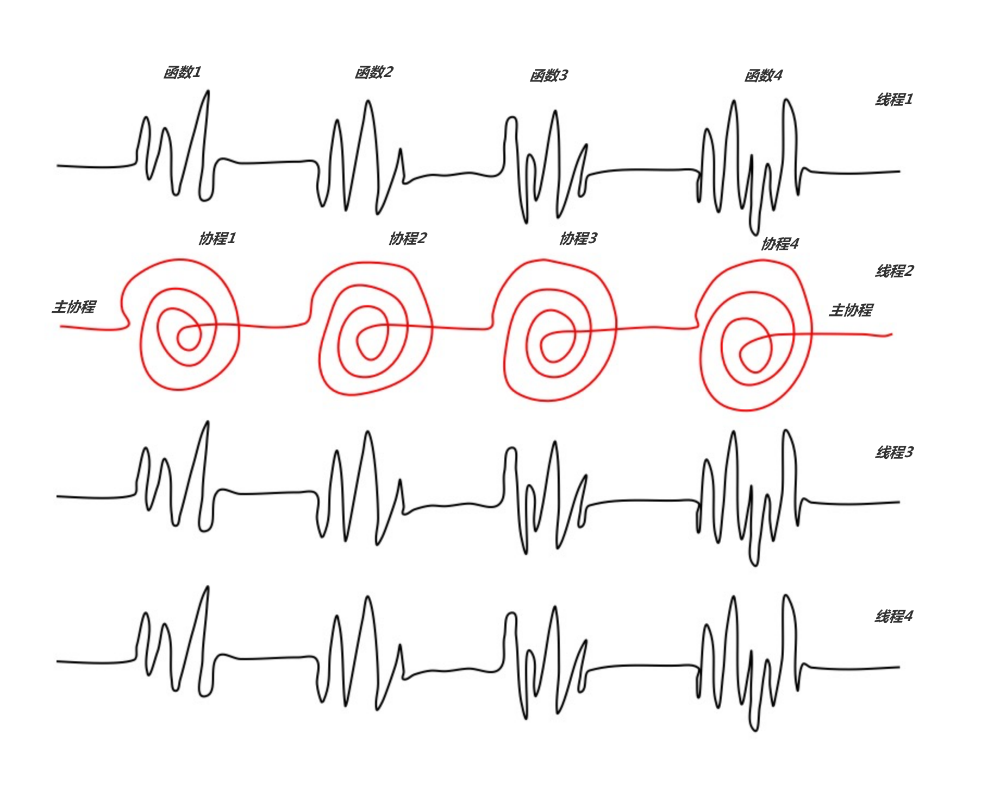
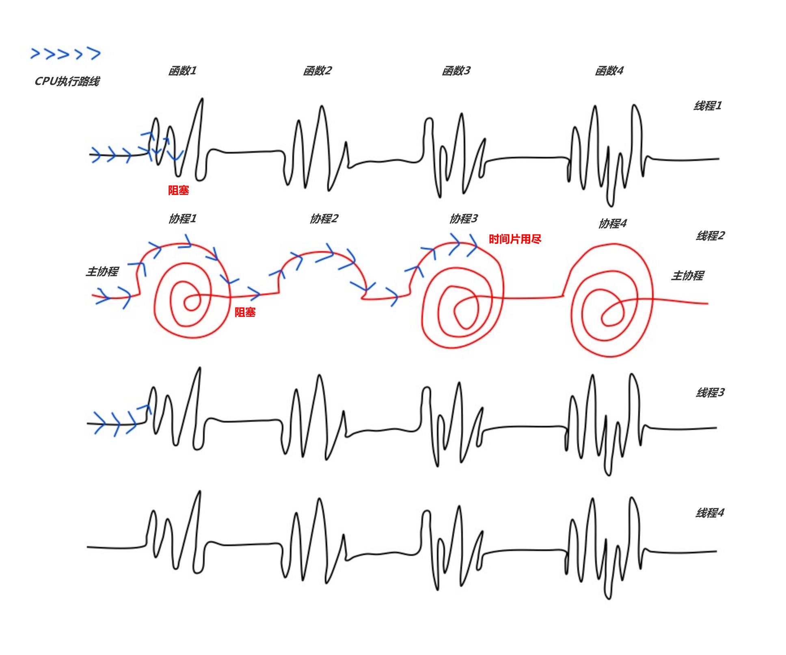

第一次接触到协程是在高考结束后的那个暑假。怀着不安的心情我打开了那个APP。生动的界面布局、主动的智能搜索引擎，无意间竟让好动的我在这一次的互动中变成了被动。选票、买票、出票一气呵成，但我们要讲的不是这个携程。
对于一个Java开发者来讲，“协程”是登场频率比较少的一个概念。它不像进程与线程一样，贯彻在我们的每一行代码之中。网上有关协程的文章晦涩难懂，异步、阻塞等概念穿插其中。在这里我仅将它与线程、函数分别进行比较，从区别入手剖析协程的概念。
协程和线程——调度权归属谁手
为缓和计算机中CPU的执行速度与I/O速度不匹配的矛盾，我们采取了许多的措施，其中多线程就是有效方案之一。若在执行过程中遇到耗时较长的I/O，该线程会放弃CPU，这时CPU可以去执行其他的任务，这样极大地提升了CPU的利用率。然而这种方案却有它的弱点。在I/O密集的程序中，线程的切换会十分的频繁。有这方面基础的小伙伴们都知道，线程的切换涉及到上下文的切换，虽说没有像进程切换那样改变程序地址空间，却也要使操作系统从执行代码的用户态切换到内核态。在I/O密集的程序中，不断地进行线程切换，积累起来也是一笔不小的开销。
我们思考这样两个问题：
1、是什么导致了I/O密集情况下线程的不断切换？
2、线程切换的主要开销在哪里？
当你心中有了答案，协程的面纱也就初步揭开。我们试想一个场景：一个进程中有1000个线程，其中有999个线程都被阻塞在了队列中，只有1个线程在循环运行一段代码（这里我们设为循环a++）。在多线程的情况下，每当一次循环a++线程的时间片用完，都会经历999次的上下文切换，最终再回到a++的线程继续执行。也就是说，在每一次执行a++有效指令前，都要花大量的时间开销在毫无意义的上下文切换上。这是由线程的特性导致的，由于线程的调度权归属于操作系统，它规定了当线程进入阻塞状态时自动让出CPU供其他线程执行。
协程的主要特征成就了它根本不会遇到这样的问题——协程间的调度不由操作系统掌舵。协程间的切换是在代码里实现的，它的调度权归属于用户。这意味着，我们完全可以控制一个协程在某种情况下的切换与否，具体体现在我们可以使CPU一直为某一协程服务，从而避免切换到已阻塞的那些协程上。以上场景在协程下运行，结果就会截然不同。CPU会一直停留在循环a++的线程上（假设没有进程调度），不会切换到那些已经阻塞的线程上去。除了这点以外，协程中的上下文切换还具有开销更小的特征，因为它的调度不由操作系统实现，不需要切换到内核态。正是这两个不同点，导致了在I/O密集情况下协程的性能远超多线程的现状。
协程是一种用户态的线程。这句话即一开始我对协程的理解，直到我在相关资料中看到另外一句有关它的描述——一个线程可以由多个协程组成。
面对这两个矛盾的概念，当时的心情只能用哭笑不得来形容，好在最终没有放弃。在不断试图兼容这两个概念之后，我渐渐意识到光拿协程与线程进行比较是远远不够的，这也是我还要将协程与函数进行比较的原因。
协程和函数——事件驱动模型
看完上面讲的协程与线程有关调度方面的两个不同点之后，我相信大家在逻辑上已经大致建立了协程与线程某种对立关系，但我要一边拿拖鞋拍你的脸，一边告诉你：协程跟线程不是同一级别上的概念，多协程是建立在单线程的基础上的。
为了更好地突出协程与线程的不同级别，也为了使协程与函数挂钩，我画了一张心电图。在此，我们假设：只有一个CPU。

如图所示是一个进程中四个线程的执行路径，每个线程在执行的路上都不免遇到函数调用（在图中体现为抽象的波动）。特别的是，第二个线程执行的是一个协程模型，路径上的每个波动都是一个协程。
程序启动，CPU首先被分配到线程1上。线程1的代码被按序执行，直到进入函数1后发生了阻塞。这时由于线程调度的特点，线程1让出CPU，CPU被分配到了线程2上，开始新的时间片。线程2分配到CPU，会先运行主协程的指令，接着进入协程1。在执行协程1的指令时，遇到I/O阻塞操作。由于我们在代码中实现了人为调度，CPU会切换到协程2继续执行。若协程2在执行过程中没有被阻塞，则会一直执行下去直到完成，再切换到协程3（注意：于线程2的所有流程发生在一个时间片时间内，若在流程中途时间片结束，则会发生线程调度让出CPU）。如图所示，刚刚的流程下来一共发生了两次协程调度。

经过上述分析，我想你起码已经明白了为什么说“协程跟线程不是同一级别的概念”，并且在目睹到协程调度发生在了线程调度后分配的CPU时间片中之后赞同了“多协程是建立在单线程的基础上的”这一观点。又臭又长的总结是需要反复理解的。
我们可以把上述四条执行路径想象成各自线程run方法里面的内容。一个普通的线程run方法里一般有一些函数，当这个线程分到CPU时会按顺序执行这一个个函数，只有当前面的函数执行完才能继续执行后面的函数。相比之下，当某个线程的run方法里是一个多协程模型时，一个个函数就升级成为了一个个任务协程，这种函数是可以调度的。当A函数阻塞时，我们可以先切换到B函数执行，等到下一次并且A函数就绪时再去执行它（这里的下一次指的是主协程在任务协程没有完全执行完毕时还会重新去遍历没有执行完且在就绪状态的任务协程）。可调度的函数，即为协程。协程的调度是比线程调度再细一个粒度的调度。
回过头来再将协程分别与线程、函数进行比较。我憋出了这样一句话：从调度方面，协程就像一种用户态的线程。从执行角度，一个线程可以由多个协程组成。
我自己其实比较喜欢把协程比作可调度的函数。它们不同于普通函数的点就在于，阻塞时会自动退出执行队列，在进入就绪状态后又会将自己注册到执行队列中去等待执行。外层一个where(true)检查执行队列，根据某一信号量判断所有函数是否已完成，若完成则break。
到这里，作为一个Java程序员，对协程的探索应当就此而止了。
写完之后我竟觉得这个概念不仅没有我一开始描述的那样“晦涩难懂”，反而有点过于简单，不值一提了。
下回有机会我还是写一篇文章介绍“携程”吧，携程打钱，说走就走。